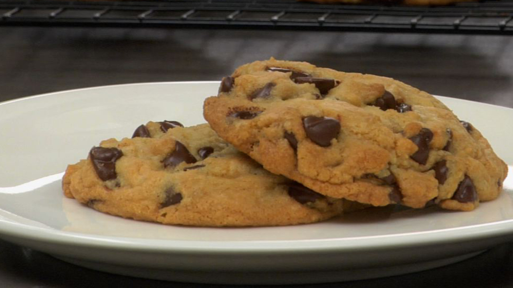

Cookies

Description
This is an easy to make Cookies recipe
Ingredients
- 3/4 cup unsalted butter* - (6 oz or 170 g)
- 1/2 cup white sugar
- 2 tsp vanilla extract
- 1 whole large egg
- 1 large egg yolk
- 2 cups all-purpose flour
- 1/2 tsp baking soda
- 1/2 tsp Fleur de Sel (or 1/2 tsp regular salt)
- 3/4 cup packed brown sugar
- 1 to 2 cups chocolate chips**
Directions
- Preheat the oven to 325° degrees Fahrenheit.
- Melt the butter then allow to cool to room temperature. Using a large bowl, cream together the butter, brown sugar and white sugar on high speed.
- Next, add the vanilla extract, egg, egg yolk and beat until smooth. Sift the flour and baking soda together. Stir in the salt. Add the dry ingredients and mix on low until everything is incorporated. Fold in the chocolate chips.
- Line a baking tray with parchment paper or spray with non-stick spray. Using a large soup spoon, form equal size rounds of dough (or use a small ice-cream scoop). Make sure to leave enough space between each cookie as they will spread out a bit as they bake. Refrigerate for fifteen minutes before baking.
- Bake the cookies for 13 to 15 minutes or until the edges turn a light golden color. Once done, cool for a few minutes before transferring to a cooling rack. Allow to cool completely before serving.